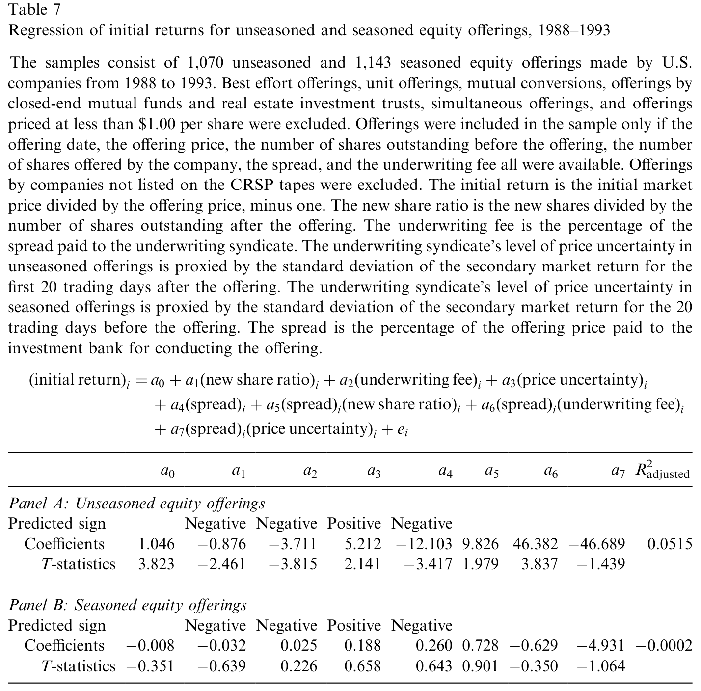
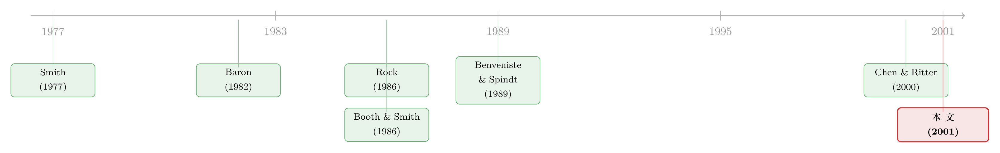

新股「打折」不是吃亏，是投行替你卖了一份看跌期权
本文读的是 Yeoman (2001, Journal of Financial Economics)：作者提出「净收益最大化 (net proceeds maximization)」理论，把承销商对发行人的保底承诺看成一张「瞬时看跌期权」，于是价差 (spread) 与发行价 (offering price) 不再是两个孤立的数字，而是一道约束最优化的解。这把尺子一口气量出了为什么投资级债的价差只有 0.5%、IPO 股票却要 7%，为什么 IPO 平均「打折」12%、而增发 (SEO) 几乎是 0%——并给「7% 之谜」提了两个全新的解释。
1 一个 7% 的谜
先抛一个让所有研究新股发行的人都挠头的事实。
在美国，一笔包销 (firm-commitment underwriting) 的承销价差——也就是发行价减去投行付给发行人的「净收益」、再除以发行价——竟然差出一个数量级：按 Lee 等 (1996) 的统计，未上市过的投资级债券平均只要约 0.5%，到了首次公开发行 (IPO) 的股票，却几乎雷打不动地停在 7%。与此同时，留给投资者的初始收益 (initial return)——上市当天市价相对发行价的涨幅——也从增发股票的约 0%，一路拉到 IPO 股票的约 12%。
这里面藏着两个一直没被同时回答的问题。
第一个问题是横截面的：为什么不同证券的价差和「打折幅度」差这么多？过去几十年的文献，几乎全部火力都集中在「IPO 为什么平均会被低价发行 (underpricing)」这一件事上——Rock (1986) 的赢家诅咒、Baron (1982) 的信息不对称、Beatty 和 Ritter (1986) 的事前不确定性……理论汗牛充栋，可它们大多只解释方向（为什么会折价），很少有人去算幅度（折价到底该是几个百分点），更没有人去问：投行到底是怎么同时把价差和发行价这两个数字定下来的？
第二个问题更尖锐，是 Chen 和 Ritter (2000) 那篇著名的《七个点的解》(The Seven Percent Solution) 砸出来的：为什么大量中等规模 IPO 的价差像是被焊死了一样，齐刷刷地落在 7%？他们的解释偏向「默契合谋」式的市场结构故事（关于这条线，可参见《7% 这把「固定的尺子」，竟能改写新股的价格》）。
Yeoman 这篇文章的野心，是用一个模型把上面两件事一起讲完。他的出发点简单到近乎朴素，却异常有力。
2 把承销看成一张「卖出期权」
要理解这套理论，得先想清楚投行在包销里到底在做什么。
包销的本质是：投行先用一个保底价（即净收益）从发行人手里把证券买断，然后立刻去市场上以更高的发行价卖出。投行赚的，就是这中间的价差。但请注意——保底这两个字，意味着风险被转移了。如果市场不买账、需求不足，按美国全国证券交易商协会的规则又不许在发行开始后向上调价，投行就只能降价甩卖，自己吞下损失。
于是 Yeoman 沿着 Smith (1977) 的思路，把这件事翻译成期权的语言。
首先，设证券在发行前一刻的真实价值 \(V^*\) 是一个对数正态分布的随机变量，方差为 \(\sigma^2\)——这个 \(\sigma^2\) 就代表承销团对「这东西到底值多少」的不确定程度。分布的均值 \(\bar{V}\) 是承销团的无偏估计。价差 \(s\) 按发行价的百分比计，发行价为 \(O\)，于是付给发行人的净收益就是 \((1-s)O\)。承销团从价差里分到的那部分叫承销费 \(u\)（同样按比例计），主要是为了补偿它承担的价格风险。
接着，一个自然的问题是：上市那一刻的初始市价，到底由什么决定？Yeoman 给出：
$$\text{initial market price} = (1-D)V^* + D(1-s)O$$
这里 \(D\) 是新股比例 (new share ratio)——股权发行中，公司新发的股数占发行后总股数的比例（纯二级发行或非股权发行时 \(D=0\)）。这个式子的直觉很美：初始市价被劈成两半，一半 \((1-D)V^*\) 来自证券那个不确定的真实价值，另一半 \(D(1-s)O\) 来自公司确确实实拿到手的、确定的净收益。
然后，承销保证的「兑现价值」\(U^*\) 就可以写出来了。如果初始市价低于发行价，投行卖不出好价钱，它的收入等于初始市价减去要付给发行人的净收益、再减去要分给主承销商和销售团的部分；如果初始市价高于发行价，它就稳拿 \(suO\)：
$$U^* = \mathrm{Min}\big((1-D)V^* + D(1-s)O - (1-s)O - (1-u)sO,\; suO\big)$$
但真正关键的一步，是把这个 \(\mathrm{Min}\) 整理一下。代数一化简，整张承销保证就露出了它的真面目：
看懂这一步，整篇文章就通了一大半：投行收的价差，本质上是它卖给发行人的一份保险（看跌期权）的权利金。 这份期权的行权价是 \(O(1-D(1-s))\)，标的是 \((1-D)V^*\)，而且因为损益在保底那一刻就由对数正态分布「单抽一次」决定，不涉及时间，也就不需要贴现——Yeoman 把它叫做「瞬时看跌期权 (instantaneous put option)」。（用「卖出期权」来理解承销商的角色，并非孤例——日本增发市场也有类似的故事，见《承销商替你做了一道「卖出期权」的算术》。）
按 Smith (1977) 的方法取期望，这份保证的期望值是
$$E(U) = suO + (1-D)\bar{V}N(-d_1) - O(1-D(1-s))N(-d_2)$$
$$d_1 = \frac{\ln\!\big((1-D)\bar{V} / O(1-D(1-s))\big) + 0.5\sigma^2}{\sigma}, \qquad d_2 = d_1 - \sigma$$
后面那两项 \(-\big[(1-D)\bar{V}N(-d_1) - O(1-D(1-s))N(-d_2)\big]\) 正是那份看跌期权 \(p\) 的 Black-Scholes 式估值（只是无需贴现）。
于是反转出现了：Smith (1977) 的竞争均衡 (competitive equilibrium) 约束要求，在投行充分竞争的世界里，承销收入必须恰好等于期望成本，也就是期望保证价值为零：
$$E(U) = suO - p = 0 \tag{5}$$
一句话——投行收的价差权利金 \(suO\)，必须正好等于它卖出的那份看跌期权的价值 \(p\)。 多一分则有超额利润、被竞争对手抢走；少一分则亏本、没人愿意干。
3 发行人和投行各打各的算盘：一道约束最优化
模型搭到这里，价差和发行价就不再是「拍脑袋」定的了。
发行人要的是什么？Smith (1986) 说得清楚：发行人只关心净收益 \((1-s)O\) 最大，它既不单独在乎价差、也不单独在乎发行价，它只挑那个愿意付最高净收益的投行。投行要的是什么？在竞争均衡下满足约束 (5)。把这两件事写进一个拉格朗日函数 (Lagrangian) \(Z\)：
$$Z = (1-s)O + \lambda(suO - p) \tag{6}$$
对 \(s\)、\(O\)、\(\lambda\) 分别求偏导并令其为零（其中 \(p_O = (1-D(1-s))N(-d_2)\)，\(p_s = DON(-d_2)\)）：
$$Z_O = (1-s) + \lambda(su - p_O) = 0 \tag{7}$$ $$Z_s = -O + \lambda(uO - p_s) = 0 \tag{8}$$ $$Z_\lambda = suO - p = 0 \tag{9}$$
联立解出未发行在外证券 (unseasoned securities) 的最优价差：
$$s^* = 1 - \frac{N(N^{-1}(u)-\sigma)}{(1-D)u\exp(\sigma N^{-1}(u) - 0.5\sigma^2) + DN(N^{-1}(u)-\sigma)} \tag{10}$$
以及表示为估值占比的最优发行价：
$$\frac{O^*}{\bar{V}} = \frac{(1-D)u\exp(\sigma N^{-1}(u) - 0.5\sigma^2) + DN(N^{-1}(u)-\sigma)}{u} \tag{11}$$
这两个式子虽然丑，但读懂它们要传达的一件事就够了：检视式 (11) 会发现，只要承销费 \(u\) 小于价差的 50%（现实里几乎总是如此），最优发行价就严格小于证券的估计价值——也就是说，「打折发行」本身就是最优解。 不需要赢家诅咒、不需要信号、不需要诉讼风险，单凭「发行人要净收益最大 + 投行要竞争均衡」这两条，低价发行就自然冒了出来。
为什么？因为投行卖给发行人的那份看跌期权，行权价随发行价上升而上升、价值也随之上升；要把净收益顶到最高，最优解必然落在发行价低于估值的那一侧。把式 (10)(11) 代回去，可以算出未发行在外证券的期望初始收益：
$$E(I^*) = \frac{(1-D)u + DN(N^{-1}(u)-\sigma)}{(1-D)u\exp(\sigma N^{-1}(u) - 0.5\sigma^2) + DN(N^{-1}(u)-\sigma)} - 1 \tag{13}$$
同样地，只要 \(u<50\%\)，\(E(I^*)\) 就为正——正的初始收益是低价发行的镜像，二者本是一枚硬币的两面。
来点具体的。按 Bialkin 和 Grant (1985)，美国典型承销里管理费、承销费、销售折让分别占价差的 20%、20%、60%。取承销费 \(u=20\%\)。再设一家公司发行 215 万新股、发行后共 500 万股，于是 \(D=30\%\)（IPO 股票的典型值），价格不确定性 \(\sigma=15\%\)。代入式 (10)，最优价差 \(s^*=5.60\%\)；若承销团估的股票真实价值是每股 $15.00（合计 $39,750,000），式 (11) 给出最优发行价为估值的 85.11%，即每股 $12.77；净收益是估值的 80.35%，每股 $12.05。若真实价值真等于估值，则初始市价为每股 $14.12，初始收益恰好 10.56%——和现实中 IPO 约 12% 的数量级严丝合缝。
比较静态也很干净：未发行在外证券的最优价差随价格不确定性 \(\sigma\) 递增、随承销费 \(u\) 递增、随新股比例 \(D\) 递减。这一下就把开头那个横截面之谜讲通了——投资级债 \(\sigma\) 极小，价差自然趋近零；IPO 股票 \(\sigma\) 大、\(D\) 也大，价差就被推高。
4 已发行在外的证券：为什么初始收益恰好是 0
讲到这里，一个尖锐的反问会冒出来：照式 (13)，只要 \(u<50\%\)，任何证券都该有正的初始收益。可现实里，增发股票的平均初始收益偏偏接近 0%。模型错了吗？
这恰恰是全文最漂亮的一处转折。
未发行在外的证券和已上市的已发行在外证券 (seasoned securities) 有一个本质区别：后者可以被卖空。如果增发也留出正的初始收益，那么在增发宣布到定价之间卖空、再用低价发行的股票回补，就是一笔几乎稳赚的生意。Gerard 和 Nanda (1993)、Safieddine 和 Wilhelm (1996) 都发现，公司一宣布增发，卖空量就显著上升，发行结束后又回落。而大量卖空会压低市价、进而压低发行人的净收益——这正是发行人最不想看到的。
SEC 也看到了这层风险，1988 年出台 Rule 10b-21（即后来的 Regulation M 第 105 条），禁止用发行中买到的股票去回补登记后建立的空头。Yeoman 顺着这条逻辑给出近似解：为了最大化净收益，增发的最优策略是把期望初始收益定为 0%，从根上掐掉卖空动机。 令初始市价等于发行价、即 \((1-D)V^* + D(1-s)O = O\)，并在竞争均衡约束下联立，得到已发行在外证券的最优价差：
$$s_0^* = \frac{(1-D)\big(N(0.5\sigma) - N(-0.5\sigma)\big)}{u - D\big(N(0.5\sigma) - N(-0.5\sigma)\big)} \tag{14}$$
和最优发行价：
$$\frac{O_0^*}{\bar{V}} = 1 - \frac{D\big(N(0.5\sigma) - N(-0.5\sigma)\big)}{u} \tag{15}$$
同样举个例：一家有 1 亿股的公司增发 1764.7 万股，\(D=15\%\)、\(u=20\%\)、\(\sigma=3\%\)（增发因为有市价参照，不确定性远小于 IPO）。式 (14) 给出最优价差 5.13%，式 (15) 给出发行价为估值的 99.10%（每股 $34.69），净收益 94.02%，而初始收益正好是 0%。
于是同一个模型，靠「能不能卖空」这一个开关，就同时解释了 IPO 的正初始收益和 SEO 的零初始收益。
5 回到 7%：两个新解释
绕了一圈，回到 Chen 和 Ritter (2000) 的那个 7%。
Yeoman 不否认市场结构的故事，但他指出，他这套理论本身就能给「价差扎堆在 7%」提供两个替代解释。其一，价差是 \(\sigma\)、\(u\)、\(D\) 这三个参数的函数，而对一大批规模相近、风险相近的中等 IPO 来说，这三个参数本就落在很窄的区间里，算出来的最优价差自然挤在 7% 附近——聚集未必来自合谋，可能只是参数同质。其二，这三个参数并非彼此独立：\(\sigma\) 可以是 \(D\) 的函数（公司想多发新股，承销团对估值就更没把握），\(u\) 又可以是 \(\sigma\) 的函数，它们之间的相互锁定，进一步把价差钉在了一个稳定的水平上。
换句话说，7% 不一定是「投行不肯降价」，也可能是「最优解本来就在这」。
6 把理论拖到数据面前
光有漂亮的闭式解还不够。文章第 3 节把上面的比较静态——价差和初始收益如何随 \(\sigma\)、\(u\)、\(D\) 变化——拿到真实的承销样本里做横截面回归检验，分别对未发行在外与已发行在外两类证券估计。

Table 7: reports the results from regressions for unseasoned and seasoned
如表 7 所示，回归把理论预测的符号方向（价差随不确定性升、随新股比例降等）逐一与数据对质，结果与理论的含义、以及前人实证（如 Booth 和 Smith 1986 对投资级债折价、Kang 和 Lee 1996 对可转债折价的发现）大体一致。
7 文献脉络
把这篇文章放进它该在的位置，故事会更清楚。
最早的地基是 Smith (1977)：他比较配股与包销，第一次把承销商的报酬刻画成对一份「保证」的补偿，并给出竞争均衡约束——本文几乎所有数学都长在这块地基上。接着是解释 IPO 折价的两大流派：Baron (1982) 的信息不对称、Rock (1986) 的赢家诅咒、Beatty 和 Ritter (1986) 的事前不确定性，它们告诉你为什么会折价，却很少算折多少；另一边 Booth 和 Smith (1986) 把投行的角色提炼为「认证 (certification)」。然后，Benveniste 和 Spindt (1989) 的簿记建档理论，把定价和配售捆在一起看。真正的张力在 Chen 和 Ritter (2000) 处爆发：7% 的扎堆到底是合谋还是别的？

Yeoman (2001) 站在这条线的末端，做的不是「再加一个折价的理由」，而是换一个层次：他不解释折价的某个微观成因，而是论证——在「净收益最大化 + 竞争均衡」这对最朴素的假设下，价差、发行价、折价、初始收益是同一道最优化问题的联合产物，并能一口气覆盖股、债、IPO、SEO 各类证券。这是一种「用一个框架收编一堆事实」的雄心。
评论与延伸（Q&A + 研究方向）
Q：这套理论和赢家诅咒、信号理论是竞争关系，还是互补关系？
作者明说二者并不互斥。他刻意假设那些信息因素「全都不起作用」，只为看看单凭净收益最大化能解释多少。所以正确的读法是：本文给出了一个不依赖信息不对称的基准 (benchmark)，折价的现实幅度＝这个基准 + 信息/信号等因素的额外贡献。
Q：把承销保证说成「看跌期权」，和真实期权有什么不同？
关键区别是没有时间维度。普通期权的价值依赖到期时间并需要贴现，而这份「瞬时看跌期权」的损益在保底那一刻就由对数正态分布单抽一次决定，因此 \(p\) 的公式形式像 Black-Scholes，却不含贴现项。这既是它的简洁之处，也是它的简化之处。
Q：「初始收益正好是 0」对增发来说是不是太强的结论？
这是一个近似的目标解，不是精确推导。要真正定出增发的最优价差，得知道初始收益如何影响卖空量、卖空又如何影响市价——这两条作者都没建模，而是用「把期望初始收益设为 0 以消除卖空动机」绕了过去。所以 0% 是一个聪明的近似，但其严格性依赖于「卖空动机被完全掐灭」这一假设。
Q：7% 的两个新解释，能被证伪吗？
部分能。第一个解释（参数同质导致聚集）有明确的可检验含义：如果把 \(\sigma\)、\(D\)、\(u\) 度量出来，最优价差的离散度应当能解释观察到的聚集程度；若数据显示参数差异很大、价差却仍死守 7%，那就更支持合谋/结构故事。这恰恰是后续实证可以发力的地方。
Q：\(\sigma\)（价格不确定性）在实证里怎么观测？这是不是模型的软肋？
是软肋。\(\sigma\) 是承销团主观的估值不确定性，不能直接观测，文中是用 IPO 取 15%、SEO 取 3% 这样的「典型值」代入。回归检验里必然要找代理变量（如发行规模、行业、历史波动率），代理的好坏直接决定了比较静态检验的可信度。
Q：这个框架能不能直接搬到公司债？
原理上可以——令新股比例 \(D=0\)（非股权发行）即可，模型预测此时价差主要由 \(\sigma\) 和 \(u\) 驱动，投资级债 \(\sigma\) 极小故价差趋零，与现实吻合。但债券的下行风险结构、赎回条款、评级分层都没进模型，要真用到信用市场还得大改。
几个可能的研究问题与提案
1. 用承销保证的「期权 delta」给债券承销定价。 【经济故事】既然包销＝投行卖了一份看跌期权，那么这份期权的「希腊字母」就该能预测投行的对冲行为和定价。债券（\(D=0\)）尤其干净，价差应随发行人估值不确定性单调变化。 【可行性】中。需要 TRACE 的公司债一级发行与做市数据、以及发行人层面的波动率代理。识别难点在于把「不确定性 \(\sigma\)」从信用利差里干净地剥出来。
2. 卖空约束作为「初始收益＝0」机制的直接检验。 【经济故事】本文断言增发的零初始收益来自卖空压力。若如此，那么在 Reg M 第 105 条这类卖空管制变化的前后，增发的初始收益应当系统性地改变。 【可行性】高。Reg SHO 试点、105 条的历次修订都提供了准自然实验，DiD 设计可行，数据（SDC 增发样本 + 卖空数据）成熟。
3. 把外资持有人结构塞进 \(\sigma\)。 【经济故事】若发行的目标投资者里外资占比高、信息更分散，承销团的估值不确定性 \(\sigma\) 可能更大，模型预测价差更高、折价更深。这给「外资与发行成本」提供了一个结构化的预测。 【可行性】中。需要发行层面的投资者构成数据（往往不公开），识别上要小心 \(\sigma\) 与外资占比的内生性。
4. 「7% 聚集」的参数同质 vs. 合谋之争，做一次结构化分解。 【经济故事】本文给了一个可检验的零假设：聚集来自参数同质。把 \(\sigma\)、\(D\)、\(u\) 估出来，看最优价差的理论离散度能否复现观察到的聚集，剩下的「无法解释的扎堆」才归给市场结构。 【可行性】中到高。Chen-Ritter 的样本框架现成，难点是 \(\sigma\) 的度量；但即便用粗代理，也能给「合谋解释还剩多大空间」划一条线。
我的判断
贡献上，这篇文章最大的价值不是「又一个折价理论」，而是视角的统一：它用一对极朴素的假设，把价差、发行价、折价、初始收益变成同一道约束最优化的联合解，并跨越股/债、IPO/SEO 给出可比的闭式表达和清晰的比较静态。把承销保证读成一张「无需贴现的看跌期权」，是全文最优雅的一笔。
对识别的担忧集中在两处。其一，核心驱动变量 \(\sigma\)（价格不确定性）不可直接观测，文中靠典型值代入，实证检验只能依赖代理，这让比较静态的检验力打了折扣。其二，增发「初始收益＝0」是一个绕过去的近似，而非从卖空的微观结构里推导出来的——它依赖「卖空动机被完全消除」这个未建模的强假设。此外，整个框架是静态、单期、风险中性式的，把承销团的其他成本、超额配售期权、价格稳定都「净掉当作小量」处理，对投资级债作者自己也承认这一近似可能不成立。
后续最想看到的，是有人把 \(\sigma\) 真正度量出来，再用卖空管制的自然实验去检验第 4 节那个「零初始收益」机制——如果这两步都站得住，这套理论就从「漂亮的会计恒等式」升级成了「可证伪的结构模型」。
参考文献
Baron, D. (1982). A model of the demand for investment banking advising and distribution services for new issues. Journal of Finance 37, 955–976.
Beatty, R., Ritter, J. (1986). Investment banking, reputation, and the underpricing of initial public offerings. Journal of Financial Economics 15, 213–232.
Benveniste, L., Spindt, P. (1989). How investment bankers determine the offer price and allocation of new issues. Journal of Financial Economics 24, 343–361.
Bialkin, K., Grant, W. (1985). Securities Underwriting: A Practitioner's Guide. Practicing Law Institute, New York.
Booth, J., Smith, R. (1986). Capital raising, underwriting and the certification process. Journal of Financial Economics 15, 261–281.
Chen, H., Ritter, J. (2000). The seven percent solution. Journal of Finance 55, 1105–1131.
Gerard, B., Nanda, V. (1993). Trading and manipulation around seasoned equity offerings. Journal of Finance 48, 213–245.
Kang, J., Lee, Y. (1996). The pricing of convertible debt offerings. Journal of Financial Economics 41, 231–248.
Lee, I., Lochhead, S., Ritter, J., Zhao, Q. (1996). The costs of raising capital. Journal of Financial Research 19, 59–74.
Rock, K. (1986). Why new issues are underpriced. Journal of Financial Economics 15, 187–212.
Safieddine, A., Wilhelm, W. (1996). An empirical investigation of short-selling activity prior to seasoned equity offerings. Journal of Finance 51, 729–749.
Smith, C. (1977). Alternative methods for raising capital: rights versus underwritten offerings. Journal of Financial Economics 5, 273–307.
Smith, C. (1986). Investment banking and the capital acquisition process. Journal of Financial Economics 15, 3–29.
Yeoman, J. C. (2001). The optimal spread and offering price for underwritten securities. Journal of Financial Economics 62(2), 169–198.